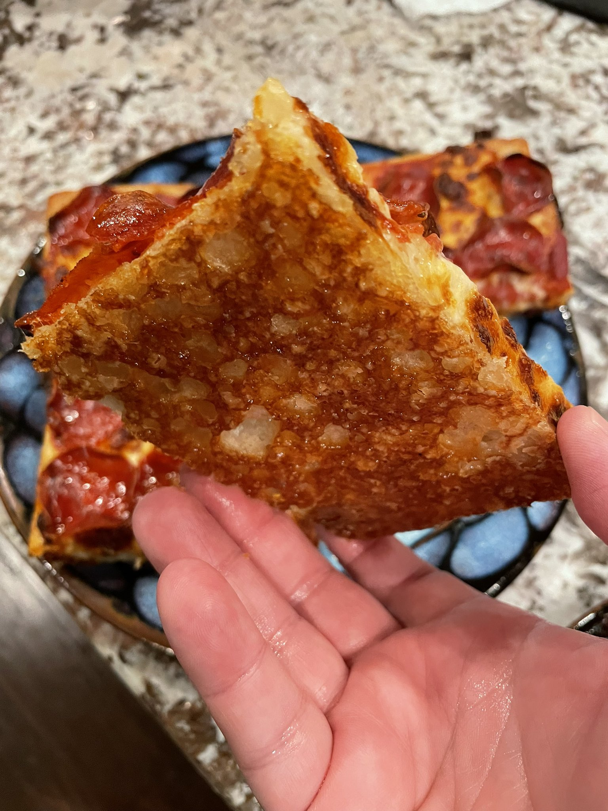

Introduction
Why?
Why am I doing this? Well, you see, like many other folks, I started pandemic baking. But I've kept at it, and I've really started enjoying making stuff regularly.
I've shared my various baking obsessions with neighbors, friends, and coworkers, and amusingly I found that GitHub gists were convenient for sharing the recipes I end up making, since the recipe app we use at home is Paprika (seriously, it's great!), which uses a minimal set of Markdown for recipe input.
Now that I've posted a few gists, I thought, "wait, now how am I going to keep track of these?" and the obvious answer is, of course, a real git repo. I found mdbook from the Rust folks, and figured, what the hell?
How to Contribute
Go to the GitHub page, fork the repository, create your own recipe, and then make a pull request.
A Note About Copyright
Copyright on recipes is tricky. My plan for this cookbook is to only accept recipes that are clearly referenced and link the source material, or which the author asserts is their own creation.
Breads
SAY HELLO TO BREAD.
- Ashkenazi Bagels
- German Christmas Stollen (Christstollen)
- Sourdough Cinnamon Buns
- Soft Sandwich Milk Bread
Ashkenazi Bagels (source)
Make delicious traditional bagels the way Polish Ashkenazi Jews do.
While I have broken it down into a more standard recipe style, do yourself a favor and read Seamus Blackley's original Twitter thread -- it's not just a recipe, it's a history lesson and it's a fantastic read.
Poolish Ingredients
- 275g all-purpose flour
- 275g warm water
- 5g active dry yeast
Dough Ingredients
- 275g warm water
- 10g Diastatic Malt Powder
- 7g active dry yeast
- 650g all-purpose flour
- 15g salt
Bagel Prep
- Pale Malt Extract
- Toppings for dipping, like sesame seeds or "everything" mix (optional)
Directions
Poolish
Start by putting the Poolish ingredients in a large bowl, mixing well. Cover, put in a cool place, and let stand for 8 hours.
Dough
- Add 275g warm water, diastatic malt powder, and yeast to the poolish.
- Add flour, plus any saved dough from last time (if any).
- Mix until loosely combined, cover, and let sit for 25 minutes.
Mix this mess together loosely. Just enough to look like this. Then LET IT SIT, covered, for 25 minutes. PROMISE ME you’ll do this. We are giving it a chance to kickstart microbial growth before adding the last ingredient... pic.twitter.com/s4AqBvs0Z6
— Seamus Blackley (@SeamusBlackley) March 15, 2021 - Sprinkle 15g salt on top of the dough.
- Mix and fold for 2-3 minutes.
Now do some of this. You’re just mixing and folding. It will be sticky and a little ornery. That’s OK. Be patient, but you can sternly tell it to behave if that helps. About 2-3 minutes of this and you will see it change into a more dough-like object. pic.twitter.com/egt9MxMHN9
— Seamus Blackley (@SeamusBlackley) March 15, 2021 - Knead for 5 minutes.
- Form up and oil the dough, cover it, and leave it in a cool place for 2 hours.
- Leave covered and put in the refrigerator for 2 hours, or overnight. (See notes below.)
Making the Bagels
- Spread some semolina on parchment paper.
- Cut off a strip of dough, and roll it up.
Do. This. pic.twitter.com/mXJNzFnNYz
— Seamus Blackley (@SeamusBlackley) March 15, 2021 - If there's a little left that doesn't make a whole bagel, save it in a ziploc bag for next time.
- Cover the rolled bagels with plastic wrap, let them rise for 40 minutes.
- Preheat the oven to 450° F.
- Fill a bowl with ice water. (I clean and reuse the bowl I made the dough in)
- Fill a pot with water and a dollop (~1tbsp or so) of malt syrup and bring to a boil.
- A few at a time, boil the bagels, 30 seconds on each side, flipping carefully.
- When finished boiling, transfer them to ice water.
- Set up the next bagels to boil, and then transfer the old ones from the water to the parchment. If you are using toppings, dip the boiled bagel in the toppings and then place toppings-down.
- Bake for 4 minutes, and then flip. You should use a bagel board to flip them if you've got them.
- Bake for another 18 minutes.
Notes
These are actually pretty easy to make, but the timing can be tricky depending on when you want your bagels to be ready. :)
I've worked out a number of possible timelines below, but I've ended up doing the "Full Overnight Rise" method and it works out great. Between the final rise, boiling, and baking, I find it takes me an hour and a half to two hours to go from fridge to serving.
Single Day Timeline
- 10am: start poolish, let sit for 8 hours
- 6pm: mix loose dough, let sit for 25 minutes
- 6:30pm: knead dough, clean and oil, cover and let rise for 2 hours
- 8:30pm: put in fridge for 2 hours
- 10:30pm: make bagels
Overnight Poolish Timeline
- 11pm: start poolish, let sit for 8 hours
- 7am: mix loose dough, let sit for 25 minutes
- 7:30am: knead dough, clean and oil, cover and let rise for 2 hours
- 9:30am: put in fridge for 2 hours
- 11:30am: make bagels
Full Overnight Rise Timeline
- 1pm: start poolish, let sit for 8 hours
- 9pm: mix loose dough, let sit for 25 minutes
- 9:30pm: knead dough, clean and oil, cover and let rise for 2 hours
- 11:30pm: put in fridge for 8?? hours
- 7am: make bagels
German Christmas Stollen (Christstollen) (source)

Stollen is like if danish and fruitcake had a baby. A delicious, tasty baby.
Hrm. OK, that's disturbing.
Anyway, if you find yourself liking the idea of a fruitcake but find it's never quite lived up to your expectations, try this soft and dense bread chock full of fruit and nuts and then COVERED in butter and sugar.
Seriously, how can you not love a recipe that says "poke a bunch of holes in the bread to make sure the butter soaks in"?!?
Note that this dough is very wet, so you really will want to do it in a stand mixer with a dough hook. You can probably do it kneading by hand, but you'll probably want to add more flour to make it manageable and it will not end up as soft in the end.
Ingredients
Fruits & Nuts
-
250g (9oz) fruit
Personally, I use a combination of regular and golden raisins, currants, and glazed red cherries.
-
170g (6oz) candied citrus peel, finely diced
The original recipe wants you to make your own, with 3oz lemon and 3oz orange. I just use Nuts.com's "glazed mixed peel" because I'm lazy and nuts.com is awesome.
-
85g (3oz) candied orange peel, finely diced
-
3oz blanched slivered or sliced almonds, finely chopped
-
1/3 cup quality dark rum
Dough
- 1 cup lukewarm whole milk
- 3 tsp active dry yeast
- 1/2 cup granulated sugar
- 480g (4 cups) all-purpose flour
- zest of one lemon
- 1 tsp salt
- 1 tsp ground cardamom
- 1 tsp ground mace (recommended but can substitute nutmeg)
- 1 tsp ground cinnamon
- 1 large egg
- 2 large egg yolks
- 1 1/2 sticks (3/4 cup) at room temperature
- 2 tsp vanilla extract
Glaze & Dusting
- 1 stick (1/2 cup) unsalted butter, melted
- powdered sugar for generous dusting
Directions
Prep
Place the fruit, candied citrus peel, and almonds in a medium bowl and pour the rum over it. Stir to combine. Set aside and let the fruit mixture soak in the rum while the dough rises. If you have ADD, stir this mixture occasionally to make sure the fruit gets well-covered while doing the rest of the recipe.
Stir the yeast and 2 tablespoons of the sugar into the lukewarm milk and let sit in a warm place for 10-15 minutes until very frothy.
Making the Dough (First Rise)
Place the dry ingredients in the mixer bowl: flour, remaining sugar, lemon zest, sart, cardamom, mace, and cinnamon.
Add the wet ingredients to the mixer bowl: egg, egg yolks, butter, vanilla extract, yeast/milk mixture.
Knead the dough in a stand mixer with a dough hook on the "bread" setting (2 on our Kitchenaid) for 10 minutes, making sure everything integrates well. You might think (like other doughs that use butter) that you would want to reserve the butter and add it a little at a time as it mixes, but I found that just delays how long it takes for things to integrate. Just make sure it's actually room temperature and give it some time, it will come together.
Cover loosely with plastic wrap and place it in a warm place or lightly warmed oven to rise until nearly doubled in size, at least 1 hour. If your oven has a "bread proof" mode, use that. If not, put the bowl in the oven and then turn the oven light on.
Making the Loaf (Second Rise)
Punch down the dough and add the soaked fruit/nut mixture to the dough. It should have absorbed all the rum by now, but if there is excess liquid, pour it out before adding the mixture to the dough. Note: the original instructions say to do this, but I never have bothered. The dough is wet, but there's so much butter in it, I'm still able to shape it.
Using the dough hook, knead the fruit/nut mixture into the dough until combined. If the dough is too wet to handle, add a little bit of flour until the dough pulls away from the sides of the bowl. Even when the dough is very wet, if I use a spatula to scrape the edges, it does still pull away from the bowl just fine. I just roll with it as-is.
Turn the dough out onto a floured work surface and cut it in two equal halves. Press or roll each piece into an oval to about 1 inch thickness.
Place each of the stollen on a parchment-lined baking sheet. Cover the stollen loosely with plastic wrap and let them rest in a warm place or lightly warmed oven for 40-60 minutes until puffy. At that point you can pick off any raisins that are sticking out of the dough (they will burn during baking).
Baking
Towards the end of the last rise, preheat the oven to 350°F and bake the stollen for 30-40 minutes or until golden. You can use an instant-read thermometer to aim for an internal temperature of 190°F.
Glazing
Let the stollen sit for 5 minutes, then use a toothpick to poke holes all over the stollen (this will allow the butter to seep in). While you wait, microwave a stick of butter until it melts.
Generously brush the stollen with the melted butter while the stollen are still warm. Immediately sprinkle with a generous amount of powdered sugar, rubbing it into the creases and down the sides. Yes, you will get messy powdered-sugar-glazed hands when you're done. This is a feature, not a bug; you know what to do.
Let the stollen cool completely. Once it has completely cooled, dust it with a layer of powdered sugar.
Storing
The stollen can be sliced and eaten now or wrapped tightly (wrap in plastic wrap then foil) and left to "ripen" in a cool place for 2 weeks. The liquid from the dried fruits will further penetrate the dough for more flavor and moisture. Stollen can also be frozen for longer storage.
Note: we tried the "ripen" thing and I can't say I could tell a difference, it mostly seemed to go a little stale even when well-wrapped. Your mileage may vary. We always just keep one and give one away to a friend or neighbor.
For eating, microwave a slice for 5-10 seconds, it gets nice and soft and a little bit warm.
We have a slice each morning for breakfast, and it holds up pretty great for about a week without doing anything other than keeping it in a plastic bread bag.
Soft Sandwich Milk Bread (source)
This recipe is based on Japanese milk bread. Imagine if Wonder Bread was actually good -- dense, soft, and flavorful.
The secret is the use of tangzhong, which is made by combining flour and water and heating it until it goes through a sort of phase change and ends up thick like pudding. It locks the moisture in and helps the bread last longer and stay extra soft.
The original recipe was for a Pullman pan, but I've decided to make normal loaves from it, so I tweaked it to just work with our regular bread pans at home.
Ingredients
Tangzhong
1 cup (240 ml) water 1/3 cup (40 g) bread flour
Dough
- 1 cup (240 ml) half & half
- 50g (1/4 cup) sugar
- 4 1/2 teaspoons (14g or 2 packets) active dry yeast
- 650g (5 cups) bread flour
- 62g (1/2 cup) milk powder
- 2 tsp (15 g) salt
- 2 large eggs, room temperature
- 4 tbsp (56 g or 1/2 stick) unsalted butter, softened
Dough (Alternate Rye Version)
- 1 cup (240 ml) half & half
- 50g (1/4 cup) sugar
- 4 1/2 teaspoons (14g or 2 packets) active dry yeast
- 390g (3 cups) bread flour
- 260g (2 cups) rye flour
- 2 tbsp vital wheat gluten
- 62g (1/2 cup) milk powder
- 2 tsp (15 g) salt
- 1 tsp (scant) allspice
- 1 tsp (scant) mace
- 1 tbsp caraway seeds
- 2 large eggs, room temperature
- 4 tbsp (56 g or 1/2 stick) unsalted butter, softened
Directions
Tangzhong
In a small microwave-safe bowl, combine the water and bread flour for the tangzhong. Microwave in increments of 30 seconds, stirring in-between, until it is suddenly the texture of pudding.
Leave it to cool in the refrigerator while working on the rest of the recipe.
Awaken the Yeast
- Warm the half & half to about 110°F. (Slightly warm to the touch.)
- Stir together the warm half & half, sugar and yeast.
- Let sit for about 5 to 10 minutes, until foamy.
Start the Dough
- In a stand mixer bowl, briefly stir together the bread flour, milk powder and salt to combine evenly. If making the rye variant, add the allspice, mace, and caraway as well.
- Add the eggs, the yeast mixture, and the cooled tangzhong.
- Stir until the flour has been incorporated and everything comes together to form a shaggy dough.
- Using a stand mixer, knead the dough with the dough hook attachment on low speed (setting #1) for a minute or two to bring the ingredients together.
- Increase to medium-low speed (setting #2) and knead for up to 10 minutes, until the dough is smooth, elastic and pulling away from the sides of the bowl. If it passes the window test, it's ready.
- Add in the butter a tablespoon at a time and knead on low speed (setting #1), making sure it's fully incorporated before adding the next.
- When finished adding the butter, increase speed to medium-low (setting #2) and knead for 3 to 5 minutes or until the dough is smooth, elastic and glossy.
- Cover the dough with plastic wrap and let rise for about 1 hour or until double in size.
- Grease two bread pans.
- Remove the dough out onto a lightly floured surface, and divide the dough into 6 equal parts, shaping them into smooth balls.
- Cover the dough balls loosely with plastic wrap and let them rest for about 10 minutes.
- Roll out a rested dough ball into an oval about 9-inches wide. (Lightly flour the counter and rolling pin as needed.)
- Fold the sides into the middle resulting in 3 layers.
- Flatten the dough with the rolling pin, then roll the dough into a snug cylinder.
- Pinch the seams and place seam side down into one of the loaf pans.
- Repeat steps 12-15 with the remaining five dough balls, placing three cylinders of dough per loaf pan.
- Cover the dough loosely with plastic wrap and let rise for about 1 hour, until about double in volume and ready to bake.
The dough is ready to bake when:
- The top of the dough has risen about three-quarters of the way to the top of the pan.
- If you lightly poke the dough, the indentation left by your finger slowly bounces back only half-way.
30 minutes through the second rise, preheat the oven to 350°F.
Baking
Make sure your oven is preheated to 350°F.
Bake the bread for 30 to 35 minutes, until the bread is deep golden brown with an internal temperature of 190°F (88°C).
Remove the bread from the pans immediately after taking them out of the oven.
Cool your Soft Sandwich Milk Bread completely before slicing. (I know, I'm sorry.)
Breakfast
It's not just for breakfast anymore.
Ashkenazi Bagels (source)
Make delicious traditional bagels the way Polish Ashkenazi Jews do.
While I have broken it down into a more standard recipe style, do yourself a favor and read Seamus Blackley's original Twitter thread -- it's not just a recipe, it's a history lesson and it's a fantastic read.
Poolish Ingredients
- 275g all-purpose flour
- 275g warm water
- 5g active dry yeast
Dough Ingredients
- 275g warm water
- 10g Diastatic Malt Powder
- 7g active dry yeast
- 650g all-purpose flour
- 15g salt
Bagel Prep
- Pale Malt Extract
- Toppings for dipping, like sesame seeds or "everything" mix (optional)
Directions
Poolish
Start by putting the Poolish ingredients in a large bowl, mixing well. Cover, put in a cool place, and let stand for 8 hours.
Dough
- Add 275g warm water, diastatic malt powder, and yeast to the poolish.
- Add flour, plus any saved dough from last time (if any).
- Mix until loosely combined, cover, and let sit for 25 minutes.
Mix this mess together loosely. Just enough to look like this. Then LET IT SIT, covered, for 25 minutes. PROMISE ME you’ll do this. We are giving it a chance to kickstart microbial growth before adding the last ingredient... pic.twitter.com/s4AqBvs0Z6
— Seamus Blackley (@SeamusBlackley) March 15, 2021 - Sprinkle 15g salt on top of the dough.
- Mix and fold for 2-3 minutes.
Now do some of this. You’re just mixing and folding. It will be sticky and a little ornery. That’s OK. Be patient, but you can sternly tell it to behave if that helps. About 2-3 minutes of this and you will see it change into a more dough-like object. pic.twitter.com/egt9MxMHN9
— Seamus Blackley (@SeamusBlackley) March 15, 2021 - Knead for 5 minutes.
- Form up and oil the dough, cover it, and leave it in a cool place for 2 hours.
- Leave covered and put in the refrigerator for 2 hours, or overnight. (See notes below.)
Making the Bagels
- Spread some semolina on parchment paper.
- Cut off a strip of dough, and roll it up.
Do. This. pic.twitter.com/mXJNzFnNYz
— Seamus Blackley (@SeamusBlackley) March 15, 2021 - If there's a little left that doesn't make a whole bagel, save it in a ziploc bag for next time.
- Cover the rolled bagels with plastic wrap, let them rise for 40 minutes.
- Preheat the oven to 450° F.
- Fill a bowl with ice water. (I clean and reuse the bowl I made the dough in)
- Fill a pot with water and a dollop (~1tbsp or so) of malt syrup and bring to a boil.
- A few at a time, boil the bagels, 30 seconds on each side, flipping carefully.
- When finished boiling, transfer them to ice water.
- Set up the next bagels to boil, and then transfer the old ones from the water to the parchment. If you are using toppings, dip the boiled bagel in the toppings and then place toppings-down.
- Bake for 4 minutes, and then flip. You should use a bagel board to flip them if you've got them.
- Bake for another 18 minutes.
Notes
These are actually pretty easy to make, but the timing can be tricky depending on when you want your bagels to be ready. :)
I've worked out a number of possible timelines below, but I've ended up doing the "Full Overnight Rise" method and it works out great. Between the final rise, boiling, and baking, I find it takes me an hour and a half to two hours to go from fridge to serving.
Single Day Timeline
- 10am: start poolish, let sit for 8 hours
- 6pm: mix loose dough, let sit for 25 minutes
- 6:30pm: knead dough, clean and oil, cover and let rise for 2 hours
- 8:30pm: put in fridge for 2 hours
- 10:30pm: make bagels
Overnight Poolish Timeline
- 11pm: start poolish, let sit for 8 hours
- 7am: mix loose dough, let sit for 25 minutes
- 7:30am: knead dough, clean and oil, cover and let rise for 2 hours
- 9:30am: put in fridge for 2 hours
- 11:30am: make bagels
Full Overnight Rise Timeline
- 1pm: start poolish, let sit for 8 hours
- 9pm: mix loose dough, let sit for 25 minutes
- 9:30pm: knead dough, clean and oil, cover and let rise for 2 hours
- 11:30pm: put in fridge for 8?? hours
- 7am: make bagels
Frozen Buttermilk Biscuits
source: It's Always Freezer Season (p. 57, Kindle edition). Christensen, Ashley; Goalen, Kaitlyn.
Biscuits are one of those rare things that actually improve when frozen (pie dough and cookie dough also fall into this category). It’s likely about the butter.
For this recipe, we use the grated frozen butter method. This technique suspends little butter flakes throughout the dough, which rise and create flaky pastry during cooking.
Freezing the dough before baking ensures the fat and milk solids stay put (essential for creating a flaky result).
Biscuits bake quickly and can lean sweet or savory with ease. Use them to top a blueberry cobbler, or treat your biscuit dough like gnocchi, slicing it into small pillows or dumplings.
Ingredients
Dough
- 2½ lbs self-rising flour (9 cups), plus more if needed
- 1 tbsp (18g) kosher salt
- 1 lb unsalted butter, frozen
- 4 cups whole buttermilk
Self-Rising Flour Substitute
If you don't have self-rising flour, whisk these into the flour as well:
- 14tsp (43g) baking powder
- 4.5tsp (27g) kosher salt
Directions
Making the Biscuits
In a large bowl, stir together the flour and salt.
Using the large holes of a box grater, grate the frozen butter into the flour mixture, stirring and coating the butter with flour as you grate. Once all of the butter is in, use a pastry blender to distribute the butter evenly in the flour. It should have a pebbly texture.
Next, pour in the buttermilk and, using your hands, incorporate it with the flour mixture until a shaggy dough ball forms.
Turn the dough out onto a well-floured work surface and, still using your hands, carefully pat it into a loaf shape, incorporating more flour as needed until the dough is not sticky and is easy to manipulate. Gently pat the dough out into an even layer about ¾ inch thick.
Using a 2½-inch round biscuit cutter, and firmly pressing straight down (without twisting the cutter), punch out as many biscuits as possible.
Gather up the dough scraps and gently form into a ball. Press the dough out into a ¾-inch-thick layer and repeat to punch out more biscuits until you have about 24 total.
Freezing
Arrange the cut biscuit dough on a rimmed baking sheet and freeze for at least 4 hours or up to overnight for a formative freeze. Transfer to a gallon-size zip-top plastic bag, label and date, and freeze for up to 4 months.
Baking
Preheat the oven to 400°F. Place the biscuits, with their edges touching, on a rimmed baking sheet and top each with a small pat of butter. Bake for 10 to 13 minutes from room temperature or 14 to 16 minutes from frozen, until puffed and golden brown on top.
Variants
Biscuit Dumplings or “Gnocchi”
Instead of punching out the biscuit dough into rounds, cut it into strips about ¾ inch wide. Then cut each strip crosswise into 1-inch-long pieces (they’ll look like little dough pillows). Freeze as directed for the biscuits.
Orange Biscuits
In a medium bowl, combine ½ cup granulated sugar and the finely grated zest of 2 oranges. Use your fingers to rub the zest into the sugar until the sugar is damp like wet sand.
Mix the sugar with the flour and salt at the beginning of the recipe and proceed as written.
While the biscuits are in the oven, make a glaze:
In a medium saucepan over medium heat, whisk together 3 cups confectioners’ sugar, ½ cup fresh orange juice, ½ teaspoon kosher salt, and the finely grated zest of 2 oranges.
Bring the mixture to a simmer and let cook for about 6 minutes, until the mixture is smooth and the sugar has dissolved. Remove from the heat and let cool for 10 minutes.
Whisk in 8 ounces softened cream cheese until the glaze is smooth.
Let the biscuits cool for 10 minutes after removing them from the oven.
Then drizzle some of the glaze over each biscuit before serving.
German Christmas Stollen (Christstollen) (source)
Stollen is like if danish and fruitcake had a baby. A delicious, tasty baby.
Hrm. OK, that's disturbing.
Anyway, if you find yourself liking the idea of a fruitcake but find it's never quite lived up to your expectations, try this soft and dense bread chock full of fruit and nuts and then COVERED in butter and sugar.
Seriously, how can you not love a recipe that says "poke a bunch of holes in the bread to make sure the butter soaks in"?!?
Note that this dough is very wet, so you really will want to do it in a stand mixer with a dough hook. You can probably do it kneading by hand, but you'll probably want to add more flour to make it manageable and it will not end up as soft in the end.
Ingredients
Fruits & Nuts
-
250g (9oz) fruit
Personally, I use a combination of regular and golden raisins, currants, and glazed red cherries.
-
170g (6oz) candied citrus peel, finely diced
The original recipe wants you to make your own, with 3oz lemon and 3oz orange. I just use Nuts.com's "glazed mixed peel" because I'm lazy and nuts.com is awesome.
-
85g (3oz) candied orange peel, finely diced
-
3oz blanched slivered or sliced almonds, finely chopped
-
1/3 cup quality dark rum
Dough
- 1 cup lukewarm whole milk
- 3 tsp active dry yeast
- 1/2 cup granulated sugar
- 480g (4 cups) all-purpose flour
- zest of one lemon
- 1 tsp salt
- 1 tsp ground cardamom
- 1 tsp ground mace (recommended but can substitute nutmeg)
- 1 tsp ground cinnamon
- 1 large egg
- 2 large egg yolks
- 1 1/2 sticks (3/4 cup) at room temperature
- 2 tsp vanilla extract
Glaze & Dusting
- 1 stick (1/2 cup) unsalted butter, melted
- powdered sugar for generous dusting
Directions
Prep
Place the fruit, candied citrus peel, and almonds in a medium bowl and pour the rum over it. Stir to combine. Set aside and let the fruit mixture soak in the rum while the dough rises. If you have ADD, stir this mixture occasionally to make sure the fruit gets well-covered while doing the rest of the recipe.
Stir the yeast and 2 tablespoons of the sugar into the lukewarm milk and let sit in a warm place for 10-15 minutes until very frothy.
Making the Dough (First Rise)
Place the dry ingredients in the mixer bowl: flour, remaining sugar, lemon zest, sart, cardamom, mace, and cinnamon.
Add the wet ingredients to the mixer bowl: egg, egg yolks, butter, vanilla extract, yeast/milk mixture.
Knead the dough in a stand mixer with a dough hook on the "bread" setting (2 on our Kitchenaid) for 10 minutes, making sure everything integrates well. You might think (like other doughs that use butter) that you would want to reserve the butter and add it a little at a time as it mixes, but I found that just delays how long it takes for things to integrate. Just make sure it's actually room temperature and give it some time, it will come together.
Cover loosely with plastic wrap and place it in a warm place or lightly warmed oven to rise until nearly doubled in size, at least 1 hour. If your oven has a "bread proof" mode, use that. If not, put the bowl in the oven and then turn the oven light on.
Making the Loaf (Second Rise)
Punch down the dough and add the soaked fruit/nut mixture to the dough. It should have absorbed all the rum by now, but if there is excess liquid, pour it out before adding the mixture to the dough. Note: the original instructions say to do this, but I never have bothered. The dough is wet, but there's so much butter in it, I'm still able to shape it.
Using the dough hook, knead the fruit/nut mixture into the dough until combined. If the dough is too wet to handle, add a little bit of flour until the dough pulls away from the sides of the bowl. Even when the dough is very wet, if I use a spatula to scrape the edges, it does still pull away from the bowl just fine. I just roll with it as-is.
Turn the dough out onto a floured work surface and cut it in two equal halves. Press or roll each piece into an oval to about 1 inch thickness.
Place each of the stollen on a parchment-lined baking sheet. Cover the stollen loosely with plastic wrap and let them rest in a warm place or lightly warmed oven for 40-60 minutes until puffy. At that point you can pick off any raisins that are sticking out of the dough (they will burn during baking).
Baking
Towards the end of the last rise, preheat the oven to 350°F and bake the stollen for 30-40 minutes or until golden. You can use an instant-read thermometer to aim for an internal temperature of 190°F.
Glazing
Let the stollen sit for 5 minutes, then use a toothpick to poke holes all over the stollen (this will allow the butter to seep in). While you wait, microwave a stick of butter until it melts.
Generously brush the stollen with the melted butter while the stollen are still warm. Immediately sprinkle with a generous amount of powdered sugar, rubbing it into the creases and down the sides. Yes, you will get messy powdered-sugar-glazed hands when you're done. This is a feature, not a bug; you know what to do.
Let the stollen cool completely. Once it has completely cooled, dust it with a layer of powdered sugar.
Storing
The stollen can be sliced and eaten now or wrapped tightly (wrap in plastic wrap then foil) and left to "ripen" in a cool place for 2 weeks. The liquid from the dried fruits will further penetrate the dough for more flavor and moisture. Stollen can also be frozen for longer storage.
Note: we tried the "ripen" thing and I can't say I could tell a difference, it mostly seemed to go a little stale even when well-wrapped. Your mileage may vary. We always just keep one and give one away to a friend or neighbor.
For eating, microwave a slice for 5-10 seconds, it gets nice and soft and a little bit warm.
We have a slice each morning for breakfast, and it holds up pretty great for about a week without doing anything other than keeping it in a plastic bread bag.
Sourdough Cinnamon Buns (source)
This is King Arthur's sourdough cinnamon bun recipe. King Arthur is usually one of the first places I look when trying to find a new bread recipe; their recipes are generally well-tested and have good detail on not just how to make things, but also technique.
After a few attempts at these, I've pretty much nailed them. I do not bother with trying to use ripe starter, I just use discard and add the extra teaspoon of yeast to get things moving. Note that if you use active dry yeast rather than instant, you should activate it in the milk for a few minutes before combining the dough at the start.
Ingredients
Dough
- 227g (1 cup) ripe (fed) sourdough starter
- 170g (3/4 cup) lukewarm milk
- 1 large egg
- 4 tablespoons (57g) butter, softened
- 326g (2 3/4 cups) King Arthur Unbleached All-Purpose Flour
- 57g (1/2 cup) King Arthur White Whole Wheat Flour
- 50g (1/4 cup) granulated sugar
- 1 1/2 teaspoons (9g) salt
- 1 teaspoon instant (or active dry) yeast, optional*
Filling
- 159g (3/4 cup) brown sugar, packed
- 28g (1/4 cup) King Arthur Unbleached All-Purpose Flour
- 1 tablespoon cinnamon
- 1/8 teaspoon salt
- 1 tablespoon (14g) butter, melted
Icing
- 1 1/2 cups (170g) confectioners' sugar
- pinch (1/16 teaspoon) salt, optional
- 1 1/2 tablespoons ( 21g) butter, melted
- 1/2 teaspoon vanilla extract
- 1 to 2 tablespoons (14g to 28g) milk or cream
Directions
Make the Dough
Weigh your flour, or measure it by gently spooning it into a cup, then sweeping off any excess. Mix together all the dough ingredients except the salt (and yeast) until the flour is evenly moistened and the dough has formed a cohesive, sticky mass, 2 to 3 minutes on low speed of a stand mixer.
Add the salt (and yeast) on top of the dough (without mixing it in), then cover and let the dough rest for 20 minutes. This rest is period is known as an autolyse.
After the autolyse, mix in the salt (and yeast) until fully incorporated, about 1 minute on low speed. Turn the mixer up one speed and knead the dough until it’s smooth and supple though still somewhat soft and tacky, about 2 to 3 minutes.
Cover the dough and let it rest in a warm (75°F) place for 4 hours. To develop strength in the dough, stretch and fold it in the bowl three to four times during the rest. You can be fairly flexible in your timing of these, but I cannot stress to you how important this is, otherwise you will get flat buns. One stretch and fold per hour is ideal. The goal is to end up with a strong dough with good elasticity.
Make the Filling
Meanwhile, combine all the filling ingredients in a medium bowl. The texture will be somewhat like wet sand.
Turn the dough out onto a lightly greased or floured work surface and gently deflate it, patting or rolling it into a 14” x 20” rectangle.
Spread the filling evenly over the surface of the dough, leaving 1/2” of exposed dough along one short edge.
Starting with the filling-coated short edge, roll the dough into a log. As you roll, the log will lengthen to around 18".
Cut the log into twelve 1 1/2” slices and place them in a lightly greased 9” x 13” pan. Cover the pan and let the buns rise until they’re puffy, 2 to 3 hours.
At this point, you can let the buns rise for another hour or so and then bake them; or you can place the pan in the refrigerator overnight, covered, and bake the buns the next day (up to 24 hours later).
Bake (Same Day)
Bake the buns in a preheated 400°F oven for 18 to 22 minutes, until golden. A digital thermometer inserted into the center of a middle bun should read 190°F.
Remove the buns from the oven and cool for 5 to 10 minutes before icing. Alternatively, allow the buns to cool to room temperature. Cover the buns and leave them at room temperature overnight, then reheat in a 325°F oven for 10 to 15 minutes before icing and serving.
Bake (Overnight Rise)
Remove the pan from the refrigerator and leave the buns covered at room temperature while you preheat the oven to 400°F.
Bake the buns for 20 to 25 minutes, until golden. A digital thermometer inserted into the center of a middle bun should read 190°F. Remove the buns from the oven and cool for 5 to 10 minutes before icing.
Make the Icing
While the buns are baking, stir together all the ingredients in a medium bowl until smooth.
Wrap the buns in plastic and store at room temperature for a day or so; freeze unfrosted buns for longer storage.
Sourdough Discard Pancakes (source)
A nice basic pancake recipe that uses sourdough discard. I like it because you get a bit of that buttermilk-like "tang" from the sourdough, but you don't have to keep buttermilk on hand.
Ingredients
- 280g (2 cups) all-purpose flour
- 150g (~1 cup) sourdough discard -- more or less is ok
- 1 tsp baking soda
- 2 tsp baking powder
- 3 tbsp Sugar
- 400g (1 3/4 cups) milk
- 2 large eggs
- 2 tbsp canola oil
- 1 tsp salt
Directions
Place your skillet on the stove and heat it on medium-low heat for 15 minutes. Aim for a temperature of about 300ºF for cooking pancakes. Low and slow is better for pancakes to ensure a nice golden brown crust and a soft and fluffy interior.
Combine all your ingredients in one bowl and mix until combined. It's OK if it’s a little lumpy.
Melt a teaspoon of butter in the skillet. Butter adds some delicious crispiness to your pancakes. (I tend to just use a nonstick pan and skip this step.)
Pour about 1/2 cup of batter into the skillet and cook for 5 minutes or until the edges of the pancake start to look dried out and you can see some holes forming on top.
Flip your pancake over and cook for another 3 minutes.
Serve immediately with butter and syrup. Or don't! See if I care!
Snacks and Sides
Pepcorn - Spicy Chili Popcorn (source)
This is based on a YouTube recipe for "Pepcorn," a creation of Brian David Gilbert. I strongly recommend watching his actual video on how to make it, because it's hilarious.
However, this version is adapted from another YouTube video where someone simplified the process a bit by pre-making "pepcorn salt."
Extract Pepcorn Salt and Chili Oil
- 2-3 tbsp of Lao Gan Ma
- 1-2 tbsp of kosher salt
Get a small bowl and a sieve, and separate the oil from the other stuff in the Lao Gan Ma. Use a paper towel to squeeze as much moisture out of the remaining particulates as possible.
Add the particulates and the salt to a mortar, and grind until fine.
Place on a pan lined with parchment paper and put in the oven. Set the oven to 200°F and then turn it off. Leave in the oven 24 hours to cool and dry out. Store in an airtight container.
Pepcorn
- 1/2 cup popcorn kernels
- 2 tbsp vegetable oil
- 3 tbsp chili oil (from above, reserve 1 tbsp)
- 2 tsp pepcorn salt
- 1 tsp chili powder (or to taste)
Add 2 tbsp of the chili oil plus the vegetable oil to a wok, and then put the popcorn in.
Cover with heavy-duty aluminum foil.
Bring to medium-high heat, shaking the wok occasionally, then drop the heat to medium when the popcorn starts to pop. Continue to shake regularly, until the popping slows to 5 seconds between pops, then turn off the heat. Wait a few more moments for all popping to stop and then remove the foil.
Transfer the results to a bowl, add the remainder of the chili oil, the pepcorn salt, and the chili powder, and mix until even.
World's Best Black Bean Hummus
The source for this I believe started as some variation of the hummus from the Eat to Live books, but we modified it enough that it's pretty much its own thing now.
It works just as well if you use garbanzo beans instead of the black beans.
Ingredients
- 1 15oz can black beans, partially drained
- 2 Tbsp lemon juice
- 2 Tbsp raw tahini
- 2 Tbsp soy sauce (or liquid aminos)
- 2 Tbsp Penzey’s florida pepper seasoning (this is the secret weapon)
- 1/2 tsp ground cumin
- 2 cloves garlic
- pinch of cayenne powder, to taste
- pinch of paprika
Directions
Blend all ingredients except the paprika in food processor with 2 tbsp bean liquid. Process until smooth, scraping down the sides as needed.
Add additional seasoning and liquid to taste.
Top with paprika.
Main Courses
They're not just for breakfast anymore.
- Detroit Style Pizza
- Grain Mustard Cabbage with Hot and Sweet Sausage
- Instant Pot Zuppa Toscana (Olive Garden Copycat)
- Quick Basic Pizza Dough
- Winter Salad Hummus Bowl
Detroit Style Pizza
Detroit style is a lot like a Sicilian, with a foccacia-like chewy dough and extremely crispy crust which fries in the liberal amount of oil put in the pan for baking.
This recipe is made for this Detroit-style 10x14 pan from LloydPan but should scale easily to other sizes if you adjust the water and flour. The important thing is that the pan needs to be totally flat, so that the crust fries evenly.
Ingredients: Dough
- 260g water
- 325g bread flour
- 1 tsp diastatic malt powder (optional, adds a little "chew" to the crust)
- 1 tsp salt
- 1 tsp sugar
- 1 tsp active or instant dry yeast
- 2 oz corn (or vegetable) oil for pan
- a few drops butter flavoring for the oil (optional, but strongly recommended 😃)
Ingredients: Sauce and Toppings
- 8 oz can pureed tomato
- 1/2 tsp salt
- 1 tsp granulated garlic
- 1/2 tsp sugar
- 1 tbsp oregano
- 8 oz mozzarella
Directions
Dough
NOTE: I strongly recommend using a mixer. This dough is super wet and doesn't even make much of a real dough "ball" until it has rested.
In a bowl/mixer add the water at 100-110°F, the yeast and the sugar. Allow yeast to bloom for 10 minutes. Then add the salt and flour and mix for 5 minutes. (10 minutes or so if hand kneading)
Let your dough rest 15-20 minutes.
Pan Prep
While the dough is resting grab your Detroit style pizza pan and to it add the corn oil and butter flavoring and make sure they’re well mixed. I also recommend using some shortening on the sides of the pan so the crust pulls away cleanly during baking, and it will help keep the tomato sauce from creating a patina.
Lightly oil a work surface and push the dough out flat and form a sort of rectangle, pick the dough up and slap it back and forth between your hands to stretch it. If you don't feel comfortable doing this just stretch it out best you can on your work surface. Place the dough into your pan and starting with one end push the edges into the corners and turn the pan around and do the same with the other side. Using your fingertips press down hard up one side then up the other over the area of the pan.
Then, cover the pan with a towel and allow to sit out for 4-5 hours at 70-80° or until the dough has risen about half way up the pan. Now you can cook it or refrigerate it.
I know 4-5 hours seems like a lot, but you want to wait until it gets lots of air bubbles, like this:

Sauce
Combine pureed tomato, salt, garlic, sugar, and oregano and set aside.
Baking
This is the hardest part to give instructions for, because ovens vary a lot, and some don't even go up to 500 degrees. Not being able to see the crust adds an extra layer of uncertainty when trying to dial in this recipe. You'll just have to experiment and see. This is what works for me.
Preheat oven to 500°F.
Bake crust by itself for 6 minutes.
Take it out of the oven, and add your sauce, cheese, and toppings.
Detroit style typically goes right to the edge with sauce and cheese. If you have a little shredded cheddar around, sprinkle it around the outside edge to get a nice crispy cheesy rim.
Finish baking for another 14 minutes.
If it cooked right, it should look something like this on the underside of the crust:

Grain Mustard Cabbage with Hot and Sweet Sausage (source)
Ingredients
- 3 tablespoons red wine vinegar
- 2 1/2 tablespoon whole grain mustard
- 2 tablespoons extra-virgin olive oil
- 1 small head Napa cabbage (about 1 1/2 pounds), shredded
- 1/4 teaspoon fine sea salt
- 2 (1/4-pound) links hot chicken sausage
- 2 (1/4-pound) links sweet chicken sausage
- 3 tablespoons seedless raisins
- 1/4 teaspoon ground black pepper
Directions
Preheat the oven to 375°F.
In a small bowl combine the vinegar and mustard; set aside. Heat 1 tablespoon of the oil in a large skillet over medium high heat. Add sausage and cook, turning occasionally, until golden brown all over, about 2 minutes per side. Transfer sausage to a baking dish, bake for 10 minutes, then cut into small chunks.
Meanwhile, in the same skillet, heat remaining 1 tablespoon oil. Working in batches, add cabbage and cook until just tender, about 3 to 5 minutes per batch. (Keep the batches small so the cabbage cooks quickly.) Transfer cooked cabbage to a serving bowl and season with salt and pepper.
Add reserved vinegar mixture, raisins and sausage to cabbage and toss to combine.
Instant Pot Zuppa Toscana (Olive Garden Copycat) (source)
This makes a pretty good clone of the Olive Garden Zuppa Toscana, a rich sausage and potato soup.
Ingredients
- 2 tbsp olive oil
- 1 medium onion, diced
- 1 lb ground mild Italian sausage
- 4 cloves garlic, minced
- 3 large russet potatoes, unpeeled and sliced into 1/4-inch slices.
- 6 cups (1 1/2 quarts) chicken broth
- 2 cups fresh kale or spinach, chopped
- 3/4 cup heavy cream, half and half, or milk
Directions
Using the "saute" function of the Instant Pot, heat the olive oil. Add the onions and cook until they begin to become translucent.
- Add the Italian sausage, crumbling up into smaller pieces and cooking until browned.
- Add the garlic and allow to cook just until fragrant, about a minute.
- Drain off excess grease if desired and return to pot.
- Add potato slices and chicken broth.
- Lock the lid into place and set to "sealed." Cook at high pressure for 5 minutes using the Manual setting.
- When cooking is complete, allow a natural pressure release for 10 minutes, followed by a quick release.
- When pressure valve has dropped, remove the lid and add the kale or spinach to the pot. The heat from the soup will wilt the greens as you stir.
- Pour in the cream/half and half/milk, stirring to combine.
Quick Basic Pizza Dough (source)
Yes, yes, I know, Martha Stewart. But it's a good basic pizza dough recipe, and I got introduced to it by a friend who swears by it. It's good!
You can vary the type of flour to change the texture (AP flour is fine, bread flour is higher protein and will get you closer to NY style).
Ingredients
- 350g (1.5 cups) water
- 480g (4 cups) unbleached all-purpose flour (spooned and leveled), plus more for dusting
- 2 envelopes (1/4 ounce each) active dry yeast (not rapid-rise)
- 2 tablespoons sugar
- 1/4 cup extra-virgin olive oil, plus more for bowl and brushing
- 2 teaspoons kosher salt
Directions
Pour 1 1/2 cups warm water into a large bowl; sprinkle with yeast and let stand until foamy, about 5 minutes.
Whisk sugar, oil, and salt into yeast mixture. Add flour and stir until a sticky dough forms.
Transfer dough to an oiled bowl and brush top with oil. Cover bowl with plastic wrap and set aside in a warm, draft-free place until dough has doubled in bulk, about 1 hour.
Turn out onto a lightly floured surface and gently knead 1 or 2 times before using.
Notes
Dough can be stored in an oiled bowl, covered with plastic, in refrigerator up to 2 hours. To freeze, wrap dough in plastic and freeze in a resealable freezer bag up to 3 months.
I generally split this dough into 3 (to make slightly thinner crust) and freeze the extras.
When baking, I spread this out into my Detroit style pan and poke some holes with a fork, and then bake it in a 450°F oven. I pre-bake the crust for 6 minutes, add 8oz mozzarella and sauce (see the Detroit recipe for my go-to sauce recipe), and then put it back in and bake it for another 16 minutes. Your oven/mileage may vary.
Winter Salad Hummus Bowl (source)
This makes a delicious healthy lunch and you can prep all the parts ahead of time pretty easily.
We have made some modifications to this slightly, most notably lightly cooking the kale and sprouts. We prefer the texture that way.
Ingredients
Dressing
- 5 Tbsp. unseasoned rice vinegar
- 1 Tbsp. honey
- 1 Tbsp. tamari or soy sauce
- 1/2 tsp. kosher salt
- 1/4 cup extra-virgin olive oil (plus more for cooking)
Salad
- 4–6 large hard-boiled eggs
- 1 bunch curly kale, stems removed, torn into bite-size pieces
- 1 lb. brussels sprouts, trimmed, thinly sliced
- 1 cup store-bought or homemade hummus
- 1 cup seeds or nuts for topping
- sea salt
Directions
Make the Dressing
Combine all of the dressing ingredients in a jar or similar and shake vigorously before using.
Prep the Salad
Wilt the kale and cook the brussels sprouts. We don't brown them, but just cook until they soften.
Swoosh about 1/4 cup hummus onto side of each bowl.
Add the kale and sprouts, then top with egg halves; season eggs with sea salt to taste.
Drizzle the dressing over and top with seeds.
Cocktails
Thai Basil Gimlet (source)
Ingredients
- 6 large Thai basil leaves plus more for garnish
- 1/2 oz simple syrup
- 1/2 oz fresh lime juice
- 1 1/2 oz gin
- 1 oz St. Germain
Directions
Place the basil leaves in a cocktail shaker and add the simple syrup and lime juice. Muddle the basil leaves to release the oils.
Add the gin and St Germain and fill the shaker with ice and shake vigorously for 30 seconds.
Using a strainer, pour the mixture into a cocktail glass. Garnish with a sprig of Thai Basil.